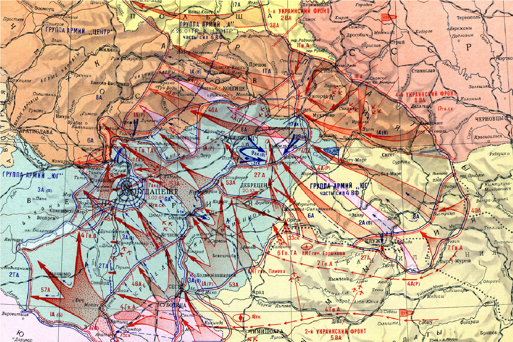
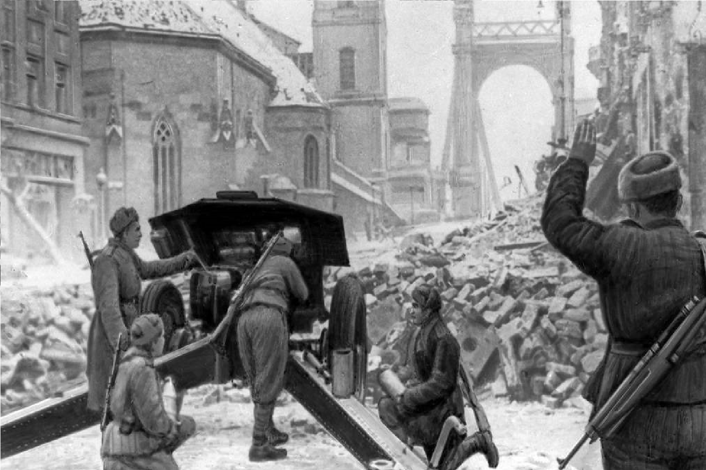
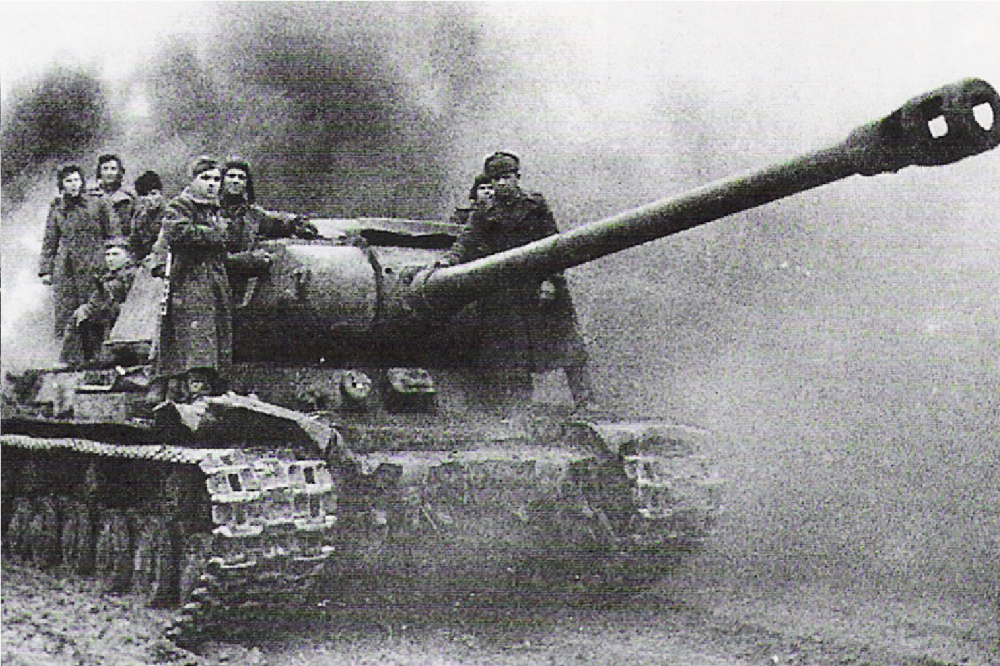

1944
|  |
|
|
Операция началась 29 декабря 1944 года с наступления советских войск, которые столкнулись с жестким сопротивлением германских сил. В ходе боев советские войска использовали свою численность и огневую мощь для прорыва обороны. Сопротивление врага было особенно ожесточенным в районе сильных укреплений, таких как форт Цепелин и другие стратегически важные позиции. Уличные бои шли с переменным успехом, и советские войска испытывали значительные трудности.Важным этапом операции стало использование советскими стратегами артиллерии и танков, а также поддержка авиации, которая играла значительную роль в разрушении укреплений противника. К 18 февраля 1945 года, после тяжёлых боёв и значительных потерь, Будапешт был полностью освобожден. |
 |
|  |
Освобождение Будапешта стало важной вехой в ходе войны, так как это позволило Советскому Союзу укрепить свои позиции в Центральной Европе и сократить возможность манёвра группировок противника. С учётом значительных потерь с обеих сторон, Будапештская операция продемонстрировала стойкость и мужество советских солдат, а также привела к окончательному освобождению Венгрии от фашистского влияния. |